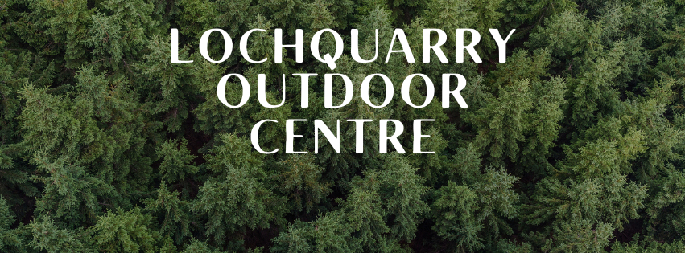
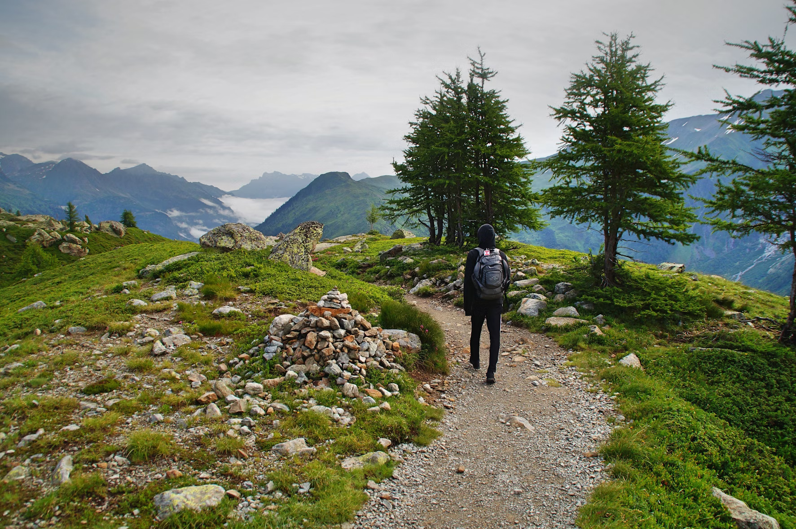
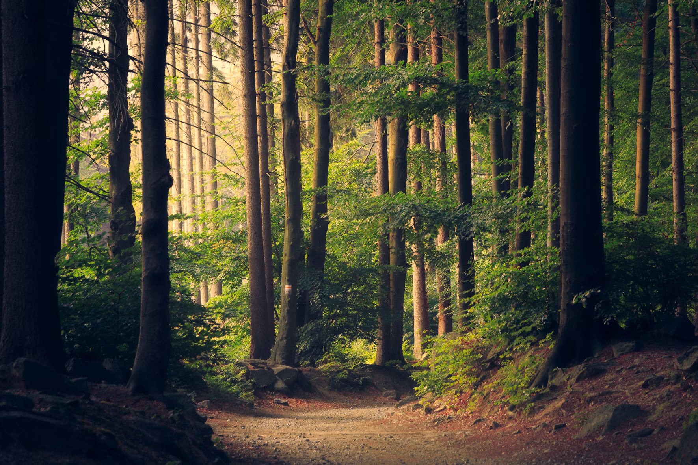

Lochquarry is an Outdoor Centre, which offers outdoor Land based, water based and Rope based activities
  Have a go at paddling, rolling and rafting in one of our brand new kayaks. Max group size 8. Ages 8+
Work single-handedly or in pairs to canoe the length of Lochquarry. You can even take a picnic with you and explore some of the Loch’s islands. Max group size 8 boats (up to 16 people). Ages 6+
Take control of one of the Centre’s two RIBs out on Lochquarry and try your hand powerboating. Max group size 6. Ages 12+
more information on water sports‘We had a great time and loved all the different activities that we did’ − 8th Gourock Guides ‘The Scouts loved every second of it, especially the powerboating’ − Martin Bainbridge, Scout Leader ‘I would definitely come back’ − Kelly, aged 9